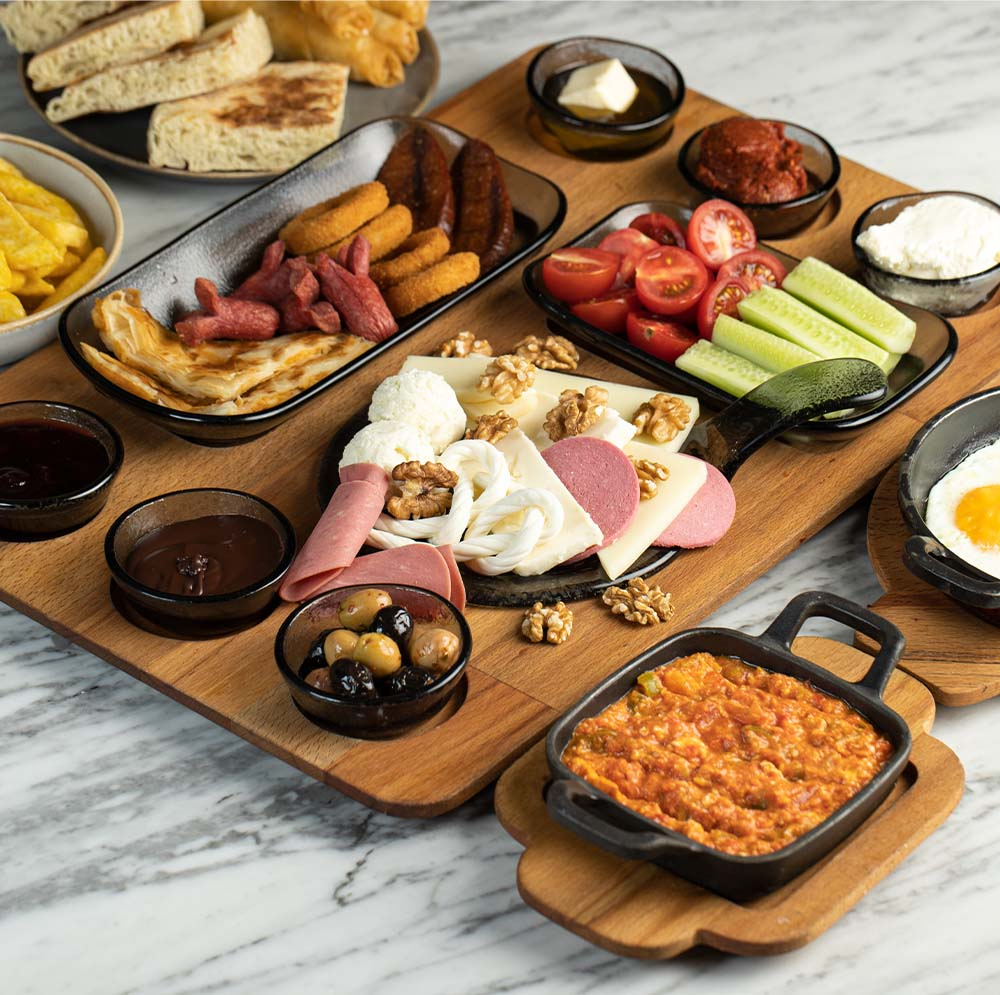

Kahvaltı refers to breakfast in Turkish, and it's an essential and often lavish meal in Turkish culture. The word "kahvaltı" is derived from two words: "kahve" (coffee) and "altı" (under/before), which translates to "before coffee." It's a meal that traditionally happens before coffee is consumed, as in the Ottoman times, coffee was considered a beverage to be enjoyed after meals rather than during or before them.
Meal prep time : 20 minutes
Servings : 4